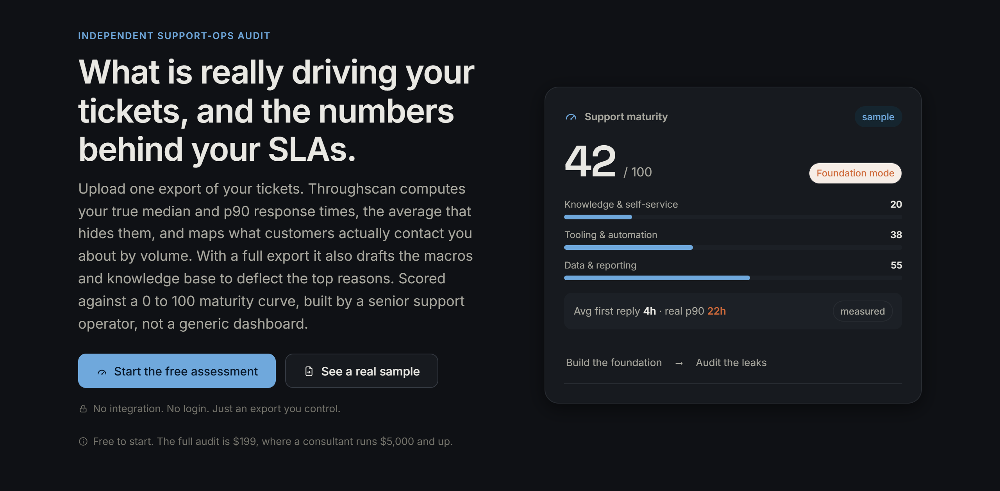
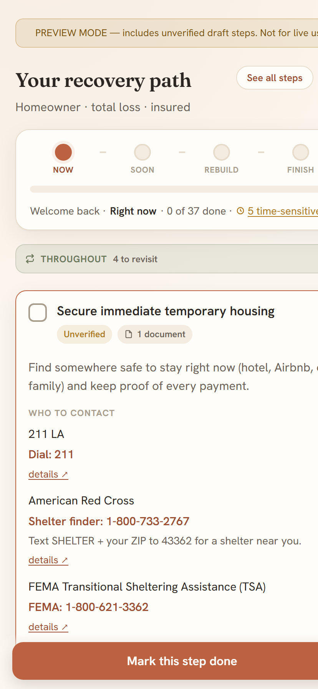

Throughscan
Claude · Cloudflare Worker · live at throughscan.com
An independent support-ops audit, built as its own product and business, now live and taking real payments. A support leader exports their tickets, uploads one file, and gets the read most dashboards hide: a plain-language diagnosis of what is working and where they leak, their true median and p90 response and resolution times, the average-vs-tail gap that quietly breaks their SLAs, what customers actually contact them about by volume, their re-contact rate, and starter macros, a knowledge base, and SLA targets drafted from their own history. It is delivered as a board-ready PDF, with a free placement that shows what the file can prove before they pay. No integration, no login, just an export.
The operator judgment is the product. Every output is labeled measured (computed over the full file), generated (a draft to confirm), or strategy (a judgment to weigh), so a guess is never dressed up as a measurement. The hard metrics are computed deterministically over the whole export, not estimated, so an analyst can open the file and get the same result. The model key stays server-side only, behind rate limits and a spend ceiling, never in the browser.

Visit Throughscan → See a sample →The Institutional-Knowledge Assistant
Claude · enterprise internal deployment
An internal AI assistant I built at my enterprise B2B SaaS day job. I loaded in a decade of product knowledge and the judgment patterns that usually take years to absorb, so instead of answering the same questions over and over, I answered each one once and the assistant generates the response from then on. As the person who onboards every new hire, it became an evergreen, on-demand source of that institutional knowledge: a new agent can get the senior answer at any hour without waiting for me.
First I systematized that two-person team's knowledge and workflows, and with no added headcount we absorbed roughly 30% ticket growth over two years, driven by client and product expansion, at a 72% single-reply resolution rate. The assistant came later, to capture that judgment so the senior answer isn't trapped in my head. It follows the rule I write about: ground every answer in real documentation, keep a person between the draft and the send, and measure the customer's outcome instead of the deflection.
I rebuilt this idea from scratch in the open, as a small app that loads a help center once, drafts cited answers a human reviews, and learns from the ones you approve. The full build, with real output from a live help center, is written up below.
Read the build → Try the preview →Work the Steps
Claude Sonnet 4.6 · React Native · live on the App Store
A paid iOS app with a Claude-powered conversational guide, built for the 12-step recovery community. Daily check-ins become saved reflections, reflections surface recurring themes, and themes feed structured step work, so the hardest part of the program never starts from a blank page.
Operator decisions baked in: a controlled voice and prompt architecture; per-user cost guardrails (prompt caching, daily fair-use caps, hard spend limits); crisis resources that bypass every gate and are never paywalled; on-device encryption at rest, with the key held in the iOS keychain; subscriptions, trials, and App Store compliance.

Virtual TC
Claude · Make.com · Airtable · pilot in motion
An 11-module pipeline. An executed purchase agreement goes in; a structured deal record, a client timeline email, and calendar deadline events come out, in minutes.
Built for messy reality: extraction against scanned, inconsistent PDFs; deadline logic derived from the contract's own terms; framed AI-assisted and human-verified, because liability lives in the gaps.
 Read the build story →
Read the build story →
OfferLetter
Claude · browser voice capture · Cloudflare Pages · retired
A web form covering every field of the California purchase agreement, driven by voice. The agent speaks the deal in plain language, the fields populate across the form, the address geocodes itself, and the finished data maps into the official CAR PDF, routed to the buyer for review and then to the listing agent. Thirty to forty-five minutes of form entry became about five minutes of talking.

Built for how agents actually work: profile auto-fill, support for up to three buyers, contingency math, close-of-escrow as days or a date, and voice input that never makes you narrate field names.
Status: built, demonstrated, and deliberately retired. Its browser-side API key got drained, and that bill rewrote how I handle keys: server-side only, per-IP rate limits, a model whitelist, and an over-the-air kill switch. Stack: Cloudflare Pages, browser voice capture, Claude API via Make.com, Google Maps geocoding.
Read the build story →Two Lead-Generation Properties
GA4 · Google Tag Manager · Search Console · live
Two local lead-generation sites, live and in production: about 40 pages of data-backed content between them, built on state licensing datasets rather than scraped filler. GA4 and Google Tag Manager are wired end to end, Search Console runs on both, conversion events fire on real form submissions, and AI crawlers are deliberately allowed so the sites are citable by answer engines.
Status: live, with partner agreements in negotiation. Deliberately unnamed here; they compete in their own markets. They are where I pressure-test how to instrument funnels and prove outcomes before claiming them.
Recovery Navigator
Static web app · local storage only · no accounts by design · in progress
A step-by-step recovery roadmap built with a close friend who lost his home in the Eaton fire: the deadlines, agencies, and paperwork that arrive after the news trucks leave, sequenced so the right thing surfaces at the right time. Contacts live in a shared resources directory, so every agency gets verified once instead of once per step it appears on.
The defining decision: no accounts and no server. Fire survivors are prime scam targets, so recovery data never leaves their device (local storage plus a manual export file). The intake never assumes, either: it asks where you are in the process and only marks done what you confirm you've actually handled.

Status: in progress. Every step gets verified with the survivor it was built for before it goes live.